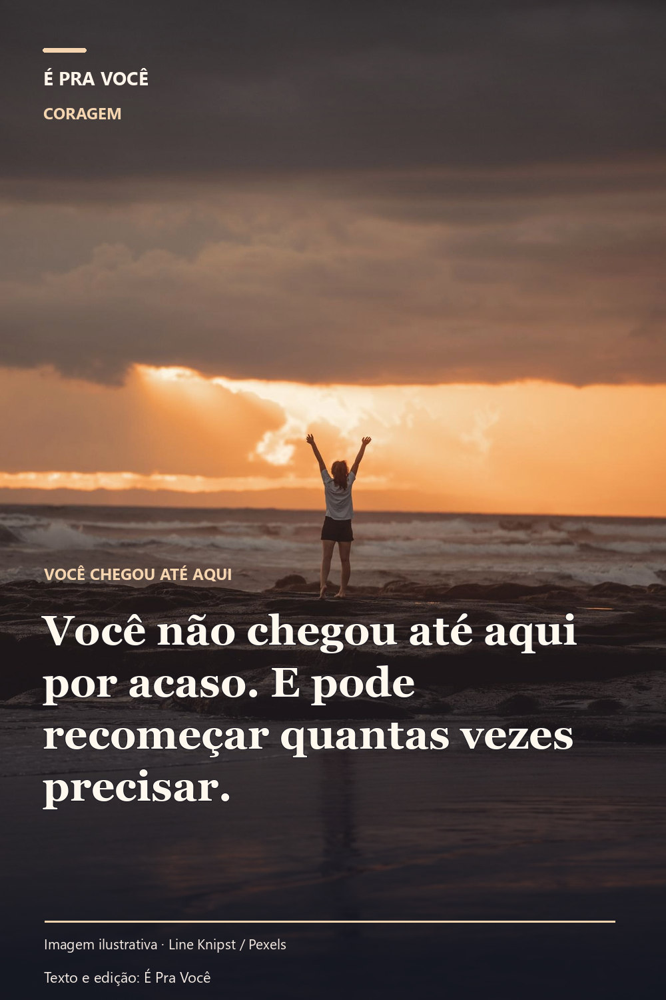

CORAGEM · IMAGEM E TEXTO AUTORAL
Você chegou até aqui
Uma mensagem para guardar e enviar com carinho.

UM RECADINHO PARA VOCÊ
Você não chegou até aqui por acaso. E pode recomeçar quantas vezes precisar.
Mulher de braços erguidos junto ao mar. Uma cena cotidiana pode carregar um sentimento que nem sempre cabe numa conversa apressada.
Se essa mensagem lembra uma pessoa querida, você pode enviá-la com uma palavra sua. É o cuidado de quem compartilha, e não a quantidade de curtidas, que dá sentido ao gesto.
O texto foi criado para acompanhar esta cena de coragem. A imagem é ilustrativa e não representa depoimento pessoal ou endosso do fotógrafo ou das pessoas retratadas.

Fonte visual: Line Knipst / Pexels; licença e restrições. A composição de texto e edição é do É Pra Você.